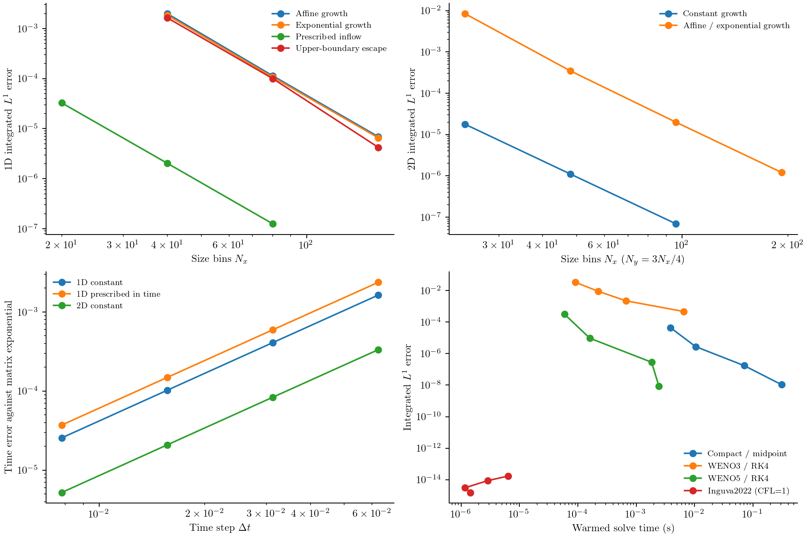
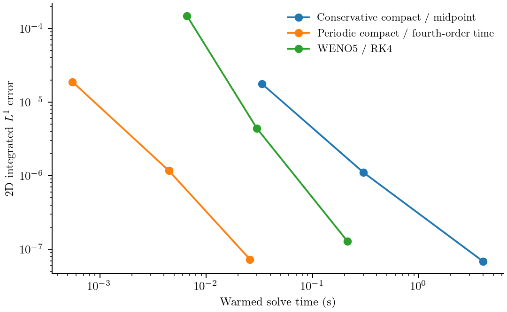
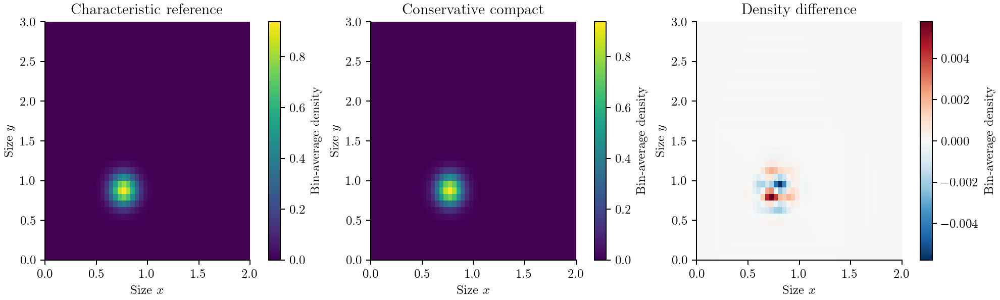
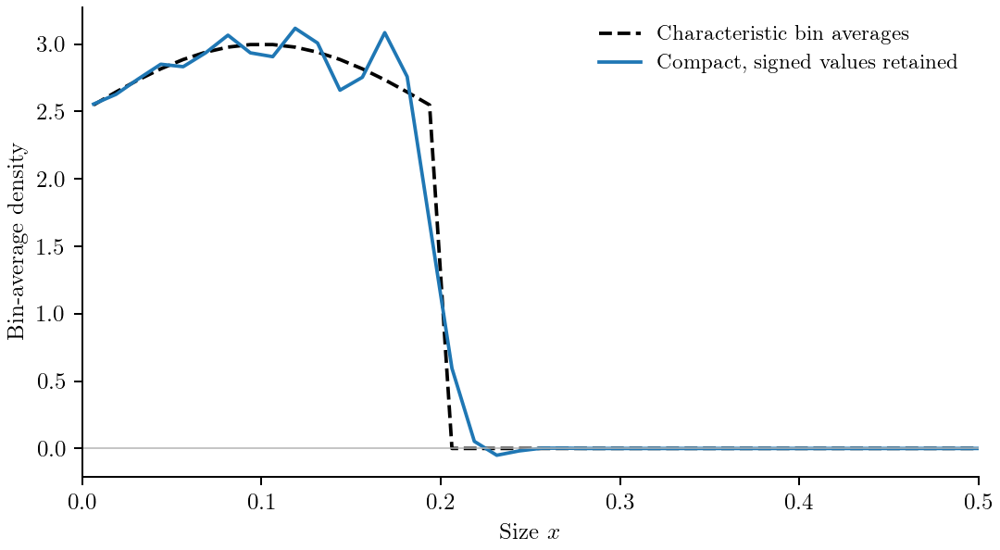
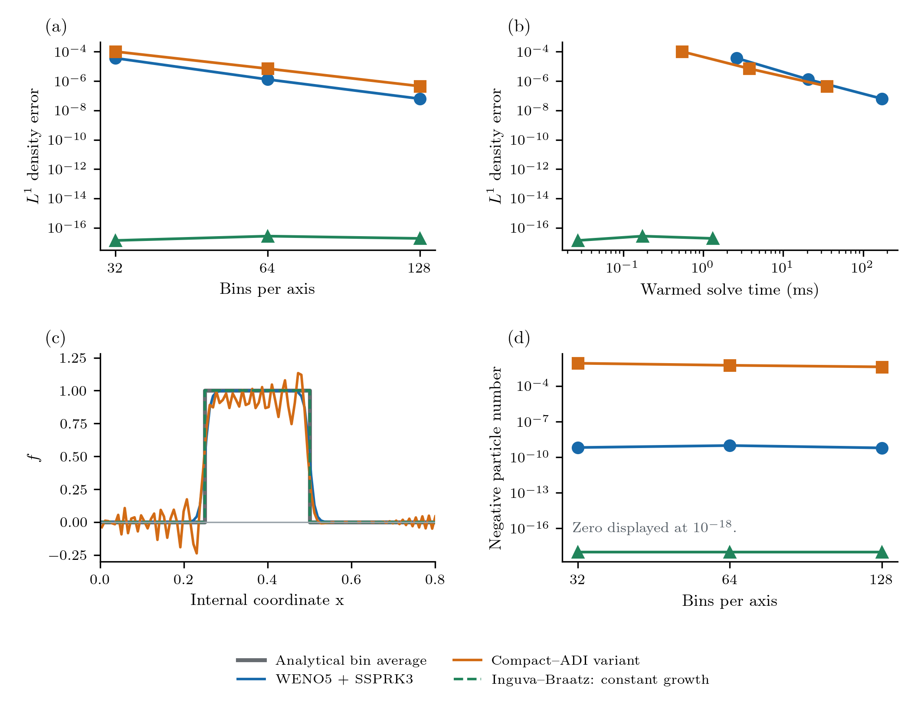
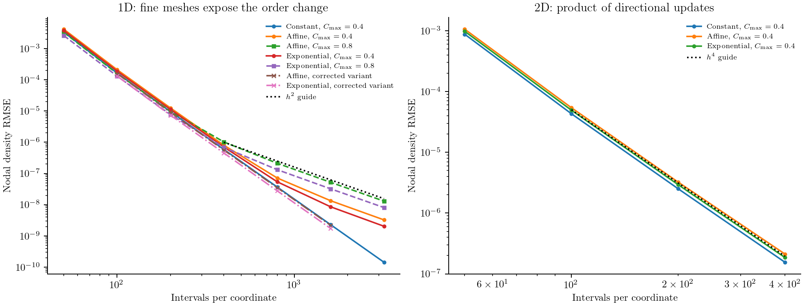

Compact-method verification
Use Compact finite-volume growth for the implemented HOCFiniteVolume formulation and a complete calculation. This page retains its numerical evidence and the separate HOCADI/published-coefficient audits. Claims below keep the original dataset and formulation qualifications.
Conservative compact growth
The current equation, state, boundary and source contract is self-contained. Download paths must retain examples/compact_growth.jl and examples/verification/compact_growth.jl; the latter includes its parent file.
Start with a complete calculation
See the executable first calculation.
Equation, states and compact faces
See the bin-integral derivation.
Complete time update and number balance
See the midpoint update and number accounting.
Compilation contracts and supported combinations
Relation to the three papers
The comparison below uses the published papers and the available two-page Li supplement. Source-specific ambiguity is retained rather than resolved by assigning the package adaptation to a paper.
| Primary source | Published construction and implementation consequence |
|---|---|
| Zhang et al. (2025), Eqs. 15, 20, 30–32 | Nodal density, or autonomous transformed nodal $u=Gf$; two-level three-point HOCD. Eq. 32 is a Godunov point-source addition and does not establish high-order source integration. Its variable-growth coefficients also appear in Li SI S11. |
| Li et al. (2026), Eqs. 6–16, 18–22; SI S1–S11 | Nodal 2D ADI with intermediate states and a multilevel recovery, $f^{k+1}=2\bar f^k-f^{k-1}$. Autonomous separable transformation $u=G_1G_2f$; point source added once. This is not a product of the SI one-step updates. |
| Fu et al. (2025), Eqs. 5, 19–35, 60–84 | Cell-average characteristic finite volume, conservative parabolic remapping and a compact diffusion solve; second-order time, fourth-order spatial claims. In the linear pure-growth, zero-diffusion limit, the residual characteristic flux vanishes and Eq. 35 reduces to $hU_i^{n+1}=\int_{\bar C_i}f^n dx$. Its compact diffusion operator cancels; it is not an implicit compact growth operator. |
The new face interpolation, physical outflow closure and midpoint flux solve above are independently derived, informed by compact reconstruction and Fu's integral conservation requirement. They do not reproduce the Zhang/Li fully discrete coefficients or claim Fu's characteristic remapping algorithm. No artificial diffusion is added to the pure-growth equation.
The full Li formulation does not remove the SI audit's one-step finding: those are different algorithms. In particular, the main Eq. 8 writes an implicit intermediate update from $f^k$, while Eq. 16 recovers from $f^{k-1}$; the correspondence of these stages to SI S11, the startup values and explicit one-sided boundary coefficients are not fully specified. Eqs. 6, 8–15 also print a common $g_1g_2$ multiplier where the physical directions have distinct velocities. We therefore cannot infer an unequal-velocity production scheme by treating those lines as independent S11 steps. The literal and independently corrected nodal one-step audits below remain intact. Their order loss is not presented as a numerical result for the complete published multilevel ADI.
There is also a temporal-stage consistency issue under the literal reading of Eqs. 8 and 16. For an exact advection mode $f^k=e^{-\mathrm i\omega t_k}$, Eq. 16 requires $\bar f^k=\cos(\omega\tau)f^k$. Inserting that value into Eq. 8's apparent intermediate equation $(\bar f^k-f^k)/\tau+K\bar f^k=0$, even with exact $K=\mathrm i\omega$, leaves a residual tending to $\mathrm i\omega f^k$ rather than zero. mainstagecheck.csv records this check; its normalized residual approaches one. This identifies which interpretation needs clarification; it is not a claim that a reconstructed full-paper implementation has been tested and disproved. main_stage_check() in the existing supplement audit reproduces it separately.
Executed refinement and work–precision evidence

The spatial panels use analytic bin integrals, with a fixed small time step across meshes. The temporal panel holds the mesh fixed and compares with an independent dense matrix exponential of the semidiscrete compact operator; this removes spatial error from the time-order measurement. It includes prescribed $G(t)=0.4(1+t^2)$ and a rectangular 2D case. The work–precision panel measures one warmed solve and compares total integrated absolute error, $\sum_i|N_i-N_i^{\mathrm{ref}}|$, at the same physical final time. WENO3/5 use RK4; Inguva2022 uses its separate CFL=1 restriction. This comparison does not assert an efficiency ranking from equal grid sizes.
The extra temporal_affine_inflow rows use the continuum solution $f(x,t)=\exp(-0.15t)$ with $G(x)=0.4+0.15x$ and its exact incoming flux. The spatial reconstruction is exact for this constant density and affine flux, so its time refinement has no spatial-error floor. Boundary, interior and corner source time tests instead use independent augmented matrix exponentials for the same unmodified semidiscrete equations.

The 2D comparison also includes the older periodic fourth-order time composition. It is eligible here because there are no sources or physical boundaries. The new midpoint method often needs more steps to reach small errors: a fourth-order spatial stencil does not remove second-order time error. These are single measured solves after a separate full warm-up, not statistical timing estimates. Very short timings and their ordering are sensitive to runtime noise. Inguva's eligible whole-cell shifts reach the roundoff floor; their small nonzero slopes have no accuracy interpretation. WENO3's finite-range slopes are measured, not assumed to be its nominal order.

This field has $G_1=0.4+0.1x$ and $G_2=0.3\exp(0.12y)$ on $[0,2]\times[0,3]$, at $t=0.25$. The plotted values are bin-average densities on a 48 by 36 mesh, with a characteristic bin-integral reference. The error panel exposes the small dispersive redistribution around the peak; the source-free number remains conserved up to the explicitly recorded boundary flux and roundoff. Negative values are retained in the exports.

For $G=0.4$ and $J(t)=1+0.2\sin(2\pi t)$, the oldest newborn particles reach $x=0.2$ at $t=0.5$. The front and its oscillations are expected for this unlimited compact scheme, not evidence of smooth fourth-order accuracy. At 160 bins, the minimum density is about -0.0503 and the negative population is about $8.57\times10^{-4}$. The numerical number balance is near roundoff, while midpoint integration of the true source count has an error of about $4.19\times10^{-9}$: conservation and quadrature accuracy are different checks. The example also supplies a populated-start run that keeps the normal nonnegativity check enabled. rejections.csv retains the default front rejection and unsupported model/configuration checks.
Exact measured values, allocation counts, step counts, bin-moment errors, number-balance defects and signed minima are in results.csv. M0_error compares reference and computed inventories; it is not the flux-balance defect. M1x_error and M1y_error are respectively $|\sum x_i(N_i-N_i^{\mathrm{ref}})|$ and its y analogue, using bin centers. negative_number is $-\sum\min(N_i,0)$; minimum_density divides each bin number by its width/area before taking the minimum. RMSE is the spatially weighted root-mean-square difference of bin-average densities. orders.csv reports measured slopes rather than nominal labels. environment.txt records CPU, Julia and thread settings. Sharp-front rows retain undershoots; they do not support smooth convergence-rate claims. Standard tests also cover zero-start boundary births, one-time 2D corner deposition, coefficient changes, invalid contracts, dense directional solves and singular systems.
All 80 timed configurations explicitly retain signed values with check_nonnegative=false; completion is not a claim of nonnegative density. The source matrix-exponential tests can converge in time to a signed semidiscrete state. That checks the time update, not the physical accuracy of an unresolved singular distribution. The ordinary example runs retain the default checks, except for the clearly labelled front/field diagnostics.
| Independent refinement | Finest measured order |
|---|---|
| 1D affine growth | 4.043 |
| 1D exponential growth | 4.038 |
| Smooth physical incoming flux | 4.023 |
| Rectangular constant-growth translation | 4.002 |
| Rectangular affine/exponential growth, 192 by 144 finest mesh | 4.036 |
| Constant, prescribed-time, and rectangular time refinement | 2.000 |
| Affine growth with exact continuum incoming-flux solution | 2.000 |
| Boundary, cell and corner source time refinement | 2.000 |
The absolute number-balance defect across these runs stays below $3.2\times10^{-13}$ per unit process volume. The outgoing-Gaussian rows upper_escape compare a finite-support initial population leaving the upper boundary against characteristic bin integrals; escaped number comes from the same flux used in the state update. Verification sizes and physical times use consistent arbitrary units; wall times below are seconds.
For orientation, these are the single measured 48 by 36 periodic solves on the recorded i9-13900H, Julia 1.10.3, one Julia/BLAS thread:
| Complete method | Steps | Integrated error | Solve time (s) | Allocated (MB) |
|---|---|---|---|---|
| Conservative compact / midpoint | 2,017 | 1.10e-6 | 0.302 | 50.6 |
| Periodic compact / fourth-order time | 12 | 1.17e-6 | 0.00445 | 0.868 |
| WENO5 / RK4 | 48 | 4.40e-6 | 0.0300 | 12.0 |
These controls differ deliberately: midpoint uses $\Delta t=0.2/(0.7N_x^2)$ to balance spatial and time error; the periodic fourth-order composition and WENO5 use Courant bounds 0.4 and 0.1 respectively. All use the same physical problem, initial bin integrals and final time. Spatial-order studies instead hold $\Delta t=2\times10^{-5}$ fixed. The allocation cleanup was checked to leave all previously exported numerical quantities bit-for-bit unchanged. The unit-rescaling check changes coordinate and time units independently: bin populations and cumulative number accounting agree within $4.8\times10^{-16}$ per process volume.
julia --project=. examples/compact_growth.jl
julia --project=. examples/verification/compact_growth.jl
python docs/benchmarks/plot_compact_growth.py --usetex
julia --project=. -e 'using Test, PopulationBalanceModels; include("test/compact_finite_volume.jl")'Earlier periodic compact policy and nodal audits
HOCADI is a separate periodic transport policy. The current growth/time comparison instead uses HOCFiniteVolume, whose midpoint time update is second order.
| Policy | Supported transport | Spatial / temporal order for smooth solutions |
|---|---|---|
HOCADI(time_order=2) | Constant signed velocities; uniform periodic 2D grid | 4 / 2 |
HOCADI(time_order=4) (default) | The same periodic constant-velocity problem | 4 / 4 |
HOCFiniteVolume() | Declared positive 1D/2D growth, eligible prescribed sources and physical or periodic boundaries; see its full contract | Fourth-order interior space / second-order complete time |
The derivation and checks below describe the implemented HOCADI policy. They do not establish a reproduction of Li et al.'s size-dependent multilevel ADI method.
Periodic HOCADI update and stability
The equation is
\[\frac{\partial n(x,y,t)}{\partial t} +g_x\frac{\partial n(x,y,t)}{\partial x} +g_y\frac{\partial n(x,y,t)}{\partial y}=0,\]
with constant real $g_x,g_y$ and periodic boundaries in both directions. Each uniform axis needs at least five bins; the two axes may have different lengths, spacings and bin counts. Supply Growth2D((gx,gy)) and select compile(model,grid;evolution=HOCADI(time_order=4),bc) with paired-periodic SizeBC2D. Sources, collisions, removal, evolving bulk states and physical inflow/outflow are rejected. A spatially varying initial distribution is allowed.
The stored state is the bin integral $N_{ij}$, not a nodal density. Write $U_{ij}=N_{ij}/(h_xh_y)$ for its bin-average density. Along either axis, the compact derivative of these averages is defined by
\[\frac14d_{i-1}+d_i+\frac14d_{i+1} =\frac{3}{4h}(U_{i+1}-U_{i-1}),\qquad M\mathbf d=D\mathbf U.\]
For constant coefficients on a periodic uniform grid, bin integration commutes with translation and this stencil; its fourth-order smooth spatial consistency therefore applies to bin averages too. That argument does not extend this method to variable growth or nonuniform grids. Each coordinate uses a Cayley (implicit-midpoint) solve,
\[\left(M+\frac{g\Delta t}{2}D\right)\mathbf U^{\mathrm{new}} =\left(M-\frac{g\Delta t}{2}D\right)\mathbf U^{\mathrm{old}}.\]
One x solve and one y solve define $S_2$. The fixed directional operators commute, so this product is reversible and second order in time; it does not introduce the first-order splitting error of a general noncommuting x/y product. The fourth-order time composition is
\[S_4(\Delta t)=S_2(\gamma\Delta t)S_2((1-2\gamma)\Delta t)S_2(\gamma\Delta t), \qquad \gamma=(2-2^{1/3})^{-1}.\]
The coefficients satisfy $2\gamma+(1-2\gamma)=1$ and $2\gamma^3+(1-2\gamma)^3=0$, cancelling the leading time error of the symmetric second-order step. This is the symmetric composition described by Yoshida (1990), Eqs. 4.1–4.6. Its negative middle step is compatible here with reversible autonomous transport. It is not applied to irreversible nucleation, collision, removal, bulk exchange or physical inflow/outflow. Cyclic tridiagonal factorization uses a rank-two correction; each directional sweep costs linear work in the number of tensor cells.
Li et al.'s nodal multilevel update and its S11 coefficients define different algorithms from these Cayley solves. The paper comparison above identifies the unresolved stage recovery, initialization and physical-boundary questions. The literal and independently corrected S11 diagnostics below retain their own results; neither is the production HOCADI policy.
Stability is different from positivity
For a periodic Fourier mode with wave angle $\theta\in[-\pi,\pi]$, the compact matrices have symbols $m=1+\frac12\cos\theta$ and $d=\frac{3\mathrm i}{2h}\sin\theta$. A directional Cayley step has amplification
\[A(\theta)=\frac{m-\mathrm i z}{m+\mathrm i z},\qquad z=\frac{3g\Delta t}{4h}\sin\theta,\qquad |A(\theta)|=1.\]
The fourth-order composition is also unit modulus, including its negative step. The zero mode has amplification one, preserving total number. Parseval's identity also gives preservation of the discrete L2 norm in exact arithmetic; small roundoff drift remains in floating-point solves.
There is no Fourier-stability restriction $|g|\Delta t/h\le1$ for this periodic constant-coefficient problem. That permits Courant numbers above one, but does not make the phase accurate at a large step. For a direction, the phase of the second-order factor is $-2\arctan(z/m)$, rather than the exact transport phase $-g\Delta t\theta/h$. Spatial and temporal phase errors still need refinement.
Unit modulus provides no damping or positivity guarantee. Numerical waves near a sharp front can persist instead of decaying; their phases can produce negative lobes and overshoots while the norm stays bounded. The default nonnegativity check rejects a negative completed update. Diagnostic runs below explicitly disable that check to measure signed errors; no clipping is performed.
examples/verification/compact_adi.jl checks every resolved Fourier mode over signed Courant numbers 0.1–10 and evolves smooth/rectangular profiles for ten periods. The recorded norm changes are below $5\times10^{-14}$; negative densities remain. Independent dense-matrix tests verify the cyclic solves for both time orders. These results support stability of the implemented periodic variant, not a positivity claim or physical-boundary/paper-fidelity claim. The tensor regression tests also compare complete updates against analytic Fourier factors on unequal axes, including mixed-coordinate modes, signed/zero velocities and Courant numbers above one.
Run the focused checks from a checkout with the standard test environment. The long-period audit below writes temporary outputs, leaving retained assets intact:
julia --project=. -e 'using Test, PopulationBalanceModels; include("test/tensor.jl"); include("test/compact_finite_volume.jl")'
julia --project=. -e 'include("examples/verification/compact_adi.jl"); CompactADIAudit.run_audit(output="/tmp/pbm-hocadi-followup")'The figure below retains the smooth-profile and sharp-front evidence for this periodic constant-growth diagnostic. In particular, the front cut shows the negative lobes despite bounded norm. The two-coordinate growth case is a separate, coordinate-dependent physical problem.

Panels (a,b) show smooth-translation L¹ error versus mesh and the recorded solve cost; (c) is the 128 × 128 sharp-front cut, and (d) integrates the negative population. Exact zeros in log plots are displayed at $10^{-18}$. This historical timing column is the minimum of three warmed runs, not a new single-run measurement or the current constant-growth benchmark's protocol. The negative compact lobes remain visible. The constant integer shift and analytical bin averages overlap where the shift is eligible.
Check the supplement independently
examples/verification/li2026_supplement.jl transcribes the five coefficients of the supplement's Eq. S11. For one size coordinate the physical equation is
\[\frac{\partial f(a,t)}{\partial t} +\frac{\partial [G(a)f(a,t)]}{\partial a}=0.\]
For positive, autonomous growth, defining $u(a,t)=G(a)f(a,t)$ gives
\[\frac{\partial u(a,t)}{\partial t} +G(a)\frac{\partial u(a,t)}{\partial a}=0.\]
The printed S11 step is
\[p_{1,i}u_i^{n+1}+p_{2,i}u_{i+1}^{n+1}+p_{3,i}u_{i-1}^{n+1} =p_{1,i}u_i^n+p_{4,i}u_{i+1}^n+p_{5,i}u_{i-1}^n.\]
The audit treats $\tau$ as the time step and $\lambda=\tau/h$. It uses nodal densities on a uniform mesh. Package Grid1D and Grid2D states are bin integrals, so applying these coefficients directly to those states would introduce a separate representation error. The audit is deliberately separate from compile and simulate.
We test three laws on $0\le a\le2$: $G=0.1$, $G=0.1+0.05a$, and $G=0.1\exp(0.2a)$. The last law exercises both first and second growth derivatives in the printed coefficients. The initial density is $\exp[-((a-0.6)/0.08)^2]$. The exact comparison follows characteristics:
\[\frac{da(t)}{dt}=G(a(t)),\qquad f(a,t)=\frac{G(a_0)}{G(a)}f(a_0,0).\]
The one-dimensional run supplies exact time-dependent Dirichlet endpoints. For two dimensions, separable rates allow $u=G_xG_yf$ and a product of the two S11 directional updates. A second Gaussian factor is centered at 0.7 with width 0.1. Its exact solution is negligible at all four faces over $0\le t\le1$; that diagnostic uses zero Dirichlet faces. This directional product is not a transcription of the main paper's multilevel ADI equations or its physical boundary closure.
Results and unresolved issues

At a maximum Courant number of 0.4, the 50–400-interval results initially look fourth order for all three laws. Extending the one-dimensional test to 3200 intervals changes the conclusion: the variable-growth errors eventually approach second order. For $G=0.1+0.05a$ at a maximum Courant number of 0.8, the last two refinement slopes are approximately 2.03 and 2.00. The exponential law gives approximately 2.04 and 1.99. The constant-growth test continues to show fourth-order behavior before roundoff dominates.
The maximum Courant number is a requested bound; the actual time step is shortened uniformly to reach the final time. The CSV records the actual step. At a requested bound of 2, this Dirichlet implementation can become singular or amplify errors enormously. For example, with constant growth and an actual Courant number of 2, S11 has $p_1=0$ and $p_3=0$. The interior tridiagonal matrix with both endpoint values prescribed is singular. This is a concrete boundary/step limitation of this transcription, not evidence that every compact or periodic implementation is unstable.
The main paper's multilevel equations, the relationship to S11, and its high-order physical boundary closure therefore still need reconciliation. We do not attribute altered coefficients to the paper or claim a reproduction of its fourth-order space–time method for variable growth. The conservative adaptation above has its own derivation and evidence. The script retains singular failures, nonfinite errors, negative minima, and coarse-grid oscillations in errors.csv.
julia --project=. examples/verification/li2026_supplement.jl
python docs/benchmarks/plot_compact_audit.py --usetexA separately specified accuracy correction
The audit also contains an independently derived coefficient variant. It keeps the literal S11 result available for comparison. Under the one-step interpretation above, substituting a smooth exact solution into S11 leaves the following leading time-error contribution after division by the time step:
\[\frac{\tau^2}{24}\left[ \big(G^2G''-G(G')^2\big)\frac{\partial u}{\partial a} -G^2G'\frac{\partial^2u}{\partial a^2}\right].\]
This term vanishes for constant growth and generally remains for variable growth. It explains why a constant-growth test did not expose the order loss. Writing $\lambda=\tau/h$, the independent variant changes the printed coefficients by
\[\widetilde p_1=p_1+\frac{G\tau^2G''}{24},\qquad \delta=\frac{G\tau\lambda G'}{48},\]
\[\widetilde p_2=p_2-\delta,\quad \widetilde p_3=p_3+\delta,\quad \widetilde p_4=p_4-\delta,\quad \widetilde p_5=p_5+\delta.\]
These changes cancel that residual; they are not printed coefficients attributed to Li et al. Select variant=:consistent in the audit's run1d or run2d. For affine and exponential growth, the fine one-dimensional slopes return to approximately 4.00, and the two-dimensional product tests also approach fourth order. The values are retained in consistent_variant.csv.
This is evidence for a specified smooth nodal variant over the tested regime. It does not resolve the main paper's multilevel interpretation, the singular large-step Dirichlet case, positivity, or a general physical boundary closure. Neither audit variant is exposed as a production compile method. The public periodic HOCADI behavior remains unchanged.